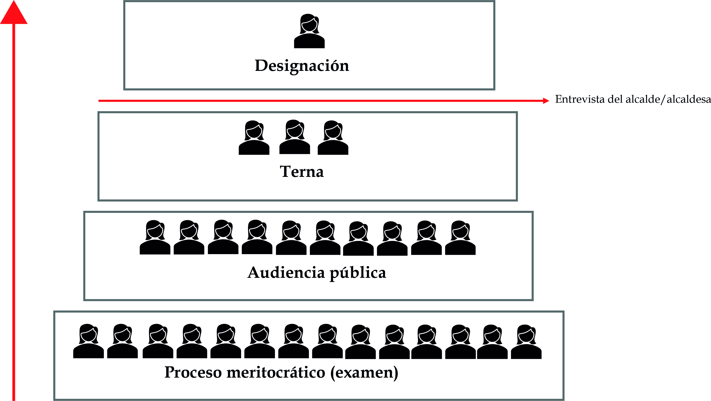
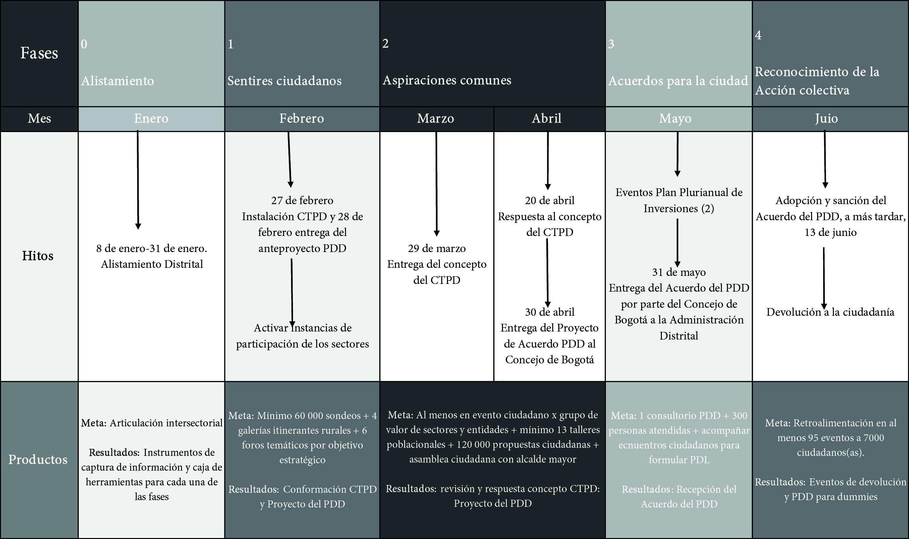
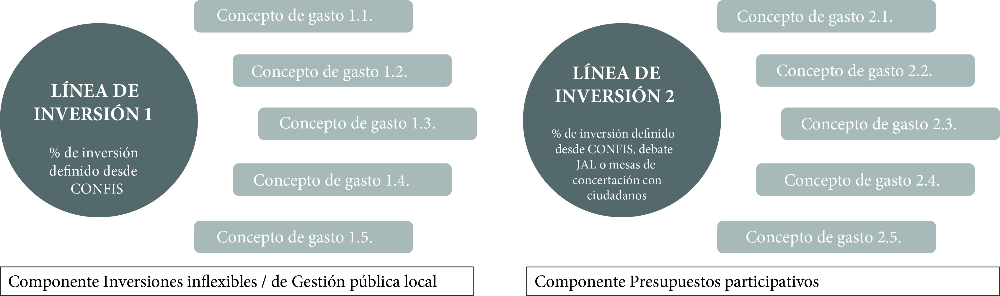

Unidad 2.2 Régimen político, administrativo y fiscal especial del Distrito Capital
Es atribución del Concejo dividir el territorio del Distrito en localidades, asignarles competencias y asegurar su funcionamiento y recursos, así como dictar las normas que garanticen la descentralización, la desconcentración y la participación y veeduría ciudadanas 1.
El Cabildo Distrital también tiene la potestad de determinar los sistemas y métodos con base en los cuales las juntas administradoras locales-JAL podrán establecer el cobro de derechos por concepto de uso del espacio público para la realización de actos culturales, deportivos, recreacionales o de mercados temporales, de conformidad con lo previsto en el Decreto-Ley 1421.
El proceso de descentralización empieza con las disposiciones sobre división territorial y las atribuciones de la autoridades distritales y locales: JAL y las de los alcaldes locales; la creación de fondos de desarrollo local. Esta sección hace un análisis crítico sobre la promesa democrática de la descentralización y la pertinencia de planes de desarrollo de las localidades. Finalmente, presenta unas conclusiones generales sobre la participación ciudadana.
3.1. División territorial
La división territorial del Distrito Capital en localidades deberá garantizar2 :
1. Que las comunidades que residan en ellas se organicen, expresen institucionalmente y contribuyan al mejoramiento de sus condiciones y calidad de vida.
2. La participación efectiva de la ciudadanía en la dirección, manejo y prestación de los servicios públicos, la construcción de obras de interés común y el ejercicio de las funciones que correspondan a las autoridades; así como en la fiscalización y vigilancia de quienes cumplan tales atribuciones.
3. Que a las localidades se pueda asignar el ejercicio de algunas funciones, la construcción de las obras y la prestación de los servicios cuando con ello se contribuya a la mejor prestación de dichos servicios, se promueva su mejoramiento y progreso económico y social.
4. Que también sirvan de marco para que en ellas se puedan descentralizar territorialmente y desconcentrar la prestación de los servicios y el ejercicio de las funciones a cargo de las autoridades distritales.
5. El adecuado desarrollo de las actividades económicas y sociales que se cumplan en cada una de ellas.
6. Que corresponda y coincida con el Plan de Ordenamiento Territorial 3.
3.2. Autoridades distritales y locales
Cada localidad estará sometida 4 a la autoridad del alcalde mayor, a la de una junta administradora y a la del respectivo alcalde local. A las autoridades locales les compete la gestión de los asuntos propios de su territorio y a las distritales, garantizar el desarrollo armónico e integrado de la ciudad y la eficiente prestación de los servicios a cargo del Distrito.
Según el artículo 62, corresponde al Concejo Distrital, por iniciativa del alcalde mayor, crear localidades, determinar su denominación, sus límites y sus atribuciones administrativas, así como dictar las demás disposiciones necesarias para su organización y funcionamiento. En todo caso, el tamaño de las localidades deberá ser proporcional al número de habitantes de cada una de ellas, teniendo en cuenta criterios demográficos.
3.2.1. Juntas Administradoras Locales
Las Juntas Administradoras Locales se elegirán popularmente para períodos de cuatro años 5; el número de ediles de cada junta administradora será determinado por el Concejo Distrital, con base en el número de habitantes de la localidad 6. Para ser elegido edil o nombrado alcalde local se requiere ser ciudadano en ejercicio y haber residido o desempeñado alguna actividad profesional, industrial, comercial o laboral en la respectiva localidad por lo menos durante los dos años anteriores a la fecha de la elección o del nombramiento 7.
De conformidad con la Constitución, la Ley, los acuerdos del Concejo y los decretos del alcalde mayor, a las Juntas Administradoras Locales les corresponden las siguientes atribuciones 8.
Atribuciones administrativas: Presentar al Concejo Distrital proyectos de acuerdo relacionados con la localidad que no sean de iniciativa privativa del alcalde mayor; vigilar la ejecución de los contratos en la localidad y formular ante las autoridades competentes las recomendaciones que estimen convenientes para su mejor desarrollo. En ejercicio de esta función, los ediles podrán solicitar y obtener los informes y demás documentos que requieran. A continuación, se presentan sus atribuciones:
- Solicitar informes a las autoridades locales, quienes deben expedirlos dentro de los diez días siguientes.
- Las juntas administradoras locales podrán citar, una vez cada seis (6) meses, al alcalde local correspondiente 9.
- Presentar anualmente una rendición de cuentas sobre la asistencia de sus corporados, iniciativas presentadas, votaciones, debates, gestión de intereses particulares, proyectos, partidas e inversiones públicas que hayan gestionado, así como cargos públicos para los cuales hayan presentado candidatos.
- Ejercer la veeduría que proceda sobre los elementos, maquinaria y demás bienes que la administración distrital destine a la localidad.
- Participar en la elaboración del plan general de desarrollo económico, social y de obras públicas.
- Adoptar el Plan de Desarrollo Local en concordancia con el plan general de desarrollo económico y social de obras públicas y el plan general de ordenamiento físico del distrito, previa audiencia de las organizaciones sociales, cívicas y populares de la localidad.
- Presentar proyectos de inversión ante las autoridades nacionales y distritales encargadas de la elaboración de los respectivos planes de inversión.
- Aprobar el presupuesto anual del respectivo fondo de desarrollo, previo concepto favorable del Consejo Distrital de Política Económica y Fiscal y de conformidad con los programas y proyectos del plan de desarrollo local 10.
En materia de infraestructura, les corresponde:
1. Vigilar y controlar la prestación de los servicios distritales en su localidad y las inversiones que en ella se realicen con recursos públicos.
2. Cumplir las funciones que, en materia de servicios públicos, construcción de obras y ejercicio de atribuciones administrativas, les asigne la ley y les deleguen las autoridades nacionales y distritales.
3. Preservar y hacer respetar el espacio público. En virtud de esta atribución podrán reglamentar su uso para la realización de actos culturales, deportivos, recreacionales o de mercados temporales y ordenar el cobro de derechos por tal concepto, que el respectivo Fondo de Desarrollo destinará al mejoramiento del espacio público de la localidad, de acuerdo con los parámetros que fije el Concejo Distrital.
4. Promover las campañas necesarias para la protección y recuperación de los recursos y del medio ambiente en la localidad.
En materia de participación ciudadana, sus atribuciones comprenden:
- Promover la participación y veeduría ciudadana y comunitaria en el manejo y control de los asuntos públicos.
- Gestionar ante la Alcaldía Local las iniciativas de la comunidad con respecto a asuntos de gestión pública y desarrollo local.
- Coordinar con las instancias de participación local para contribuir al fortalecimiento de la gestión local que permita identificar la solución de problemas relacionados con su desarrollo.
Las Juntas Administradoras Locales se reunirán, ordinariamente, por derecho propio, cuatro veces al año, así: el primer día de los meses de marzo, junio, septiembre y diciembre. Las sesiones durarán treinta días prorrogables, a juicio de la misma Junta hasta por cinco días más o por convocatoria que haga el alcalde.
El alcalde local instalará y clausurará las sesiones ordinarias y extraordinarias de las juntas administradoras y deberá prestarles la colaboración necesaria para garantizar su buen funcionamiento 11. Los ediles tendrán derecho a percibir honorarios, a cargo del respectivo Fondo de Desarrollo Local, por la asistencia a sesiones plenarias y a las de las comisiones permanentes 12. El quórum necesario para deliberar es de una cuarta parte de sus miembros, en tanto que para decidir se requiere la asistencia de la mayoría de sus integrantes. Los actos de las juntas se denominarán Acuerdos locales; los de los alcaldes, decretos locales. Su publicación se hará en el órgano oficial de divulgación del Distrito 13.
Los ediles, el correspondiente alcalde y las organizaciones cívicas, sociales y comunitarias que tengan sede en la respectiva localidad y ciudadanos conforme a la respectiva ley estatutaria pueden presentar proyectos de acuerdo local que en todo caso debe referirse a una misma materia 14; y para su aprobación requiere de dos debates celebrados en días distintos.
La Junta Administradora atenderá a las organizaciones cívicas, sociales y comunitarias, así como a los ciudadanos residentes en la localidad, que deseen opinar sobre los proyectos en trámite y a los ciudadanos que soliciten ser oídos sobre asuntos de interés para la localidad15 . Una vez aprobado el proyecto de acuerdo en segundo debate, pasará al alcalde local, quien tendrá un término de cinco días para sancionarlo u objetarlo por razones de inconveniencia o por ilegalidad16 . Si en este plazo no lo objeta deberá sancionarlo y promulgarlo 17.
Los trámites de las objeciones son los mismos que para los acuerdos distritales. Además, dentro de los tres días siguientes al de la sanción, el alcalde local enviará copia del acuerdo al alcalde mayor para su revisión jurídica. Esta revisión no suspende los efectos del acuerdo local. Si el alcalde mayor encontrare que el acuerdo es ilegal, lo enviará al tribunal administrativo competente para su decisión, el cual decidirá aplicando en lo pertinente el trámite previsto para las objeciones.
3.2.2. De los alcaldes locales
Los alcaldes locales serán nombrados por el alcalde mayor de una terna elaborada por la correspondiente Junta Administradora Local 18. La elaboración de la terna tendrá lugar dentro de los ocho días iniciales del primer período de sesiones de la correspondiente Junta Administradora Local 19. Entre sus atribuciones se encuentran las relacionadas con la administración, la seguridad y el orden público, la normativa urbana y la participación ciudadana, las cuales se resumen a continuación. En materia administrativa:
1. Administrar las Alcaldías Locales y los Fondos de Desarrollo Local.
2. Coordinar la acción administrativa del Distrito en la localidad.
3. Articular y coordinar en sus respectivas localidades las políticas distritales de cada sector a través del trabajo conjunto con su gabinete local. El alcalde local podrá crear un equipo de trabajo con el fin de que en los eventos en que sea comisionado para la práctica de despachos comisorios pueda a su vez delegarlo en este equipo.
4. Planificar, contratar y ordenar los gastos e inversiones públicas relacionados con el desarrollo de procesos de participación ciudadana en la localidad en el marco de la normatividad vigente aplicable, guardando concordancia con los criterios de: 1. representatividad poblacional; 2. diversidad y tolerancia; 3. transparencia; 4. sostenibilidad en el tiempo; 5. eficiencia y eficacia; entendida como la posibilidad de que las decisiones que se tomen en función de los espacios de participación ciudadana se conviertan en decisiones del gobierno distrital.
5. Reglamentar los respectivos acuerdos locales.
6. Cumplir las funciones que les fijen y deleguen el Concejo de Bogotá, el alcalde mayor, las juntas administradoras y otras autoridades distritales.
En materia de seguridad y orden público:
1. Velar por la tranquilidad y seguridad ciudadanas. Conforme a las disposiciones vigentes, contribuir a la conservación del orden público en su localidad y con la ayuda de las autoridades nacionales y distritales, restablecerlo cuando fuere turbado 20.
2. Implementar modelos de gestión que permitan atender de manera oportuna la justicia policiva en su territorio. Así mismo, desarrollar las distintas acciones tendientes a implementar en su localidad las políticas públicas en materia de protección, restauración, educación y prevención de que habla el artículo 8 de la Ley 1801 de 2016 o la norma que la sustituya.
En materia de normas urbanísticas:
1. Vigilar el cumplimiento de las normas vigentes sobre desarrollo urbano, uso del suelo y reforma urbana. Expedir o negar los permisos de funcionamiento que soliciten los particulares.
2. Expedir los permisos de demolición en los casos de inmuebles que amenazan ruina, previo concepto favorable de la entidad distrital de planeación. Sus decisiones en esta materia serán apelables ante el jefe del departamento distrital de planeación, o de quien haga sus veces.
3. Conocer de los procesos relacionados con violación de las normas sobre construcción de obras y urbanismo e imponer las sanciones correspondientes. El Concejo Distrital podrá señalar de manera general los casos en que son apelables las decisiones que se dicten con base en esta atribución y, ante quién.
4. En los casos y por los montos que fije la ley, los alcaldes locales impondrán las sanciones económicas y de otro orden que prevean las disposiciones urbanísticas vigentes 21. Además, sancionarán con multa a quienes, sin la autorización a que haya lugar, ocupen por más de seis horas las vías y los espacios públicos con materiales o desechos de construcción.
En materia de infraestructura y servicios públicos:
1. Vigilar y controlar la prestación de servicios, la construcción de obras y el ejercicio de funciones públicas por parte de las autoridades distritales o de personas particulares.
2. Dictar los actos y ejecutar las operaciones necesarias para la protección, recuperación y conservación del espacio público, el patrimonio cultural, arquitectónico e histórico, los monumentos de la localidad, los recursos naturales y el ambiente, con sujeción a la ley, a las normas nacionales aplicables, y a los acuerdos distritales y locales.
3. Hacer seguimiento, junto a las demás autoridades competentes, a la prestación de servicios, la construcción de obras y el ejercicio de funciones públicas por parte de las autoridades distritales o de personas particulares.
En materia de participación ciudadana:
1. Coordinar la participación ciudadana en la localidad y la articulación entre los procesos de participación ciudadana y la toma de decisiones del gobierno distrital.
2. Desarrollar acciones que promuevan los derechos de las mujeres, desde los enfoques de género, de derechos, diferencial y territorial.
3. Ejecutar las políticas de presupuestos participativos dictadas por la Secretaría Distrital de Gobierno y establecer las disposiciones que aseguren la realización de las actividades necesarias para la efectiva participación de la sociedad civil en el proceso de programación del presupuesto local, el cual se deberá desarrollar en armonía con el plan de desarrollo distrital y el de las localidades, en plena concordancia con la Ley Estatutaria 1757 de 2015 y las demás disposiciones legales aplicables.
El artículo 95 reiteró que las juntas administradoras y los alcaldes promoverán la participación de la ciudadanía y la comunidad organizada en el cumplimiento de las atribuciones que corresponden a las localidades y les facilitarán los instrumentos que les permitan controlar la gestión de los funcionarios.
3.2.3. Fondos de desarrollo local
El artículo 89 22 determinó que no menos del 12 % de los ingresos corrientes del presupuesto de la administración central del Distrito se asignará a las localidades teniendo en cuenta las necesidades básicas insatisfechas de la población de cada una de ellas y según los índices que para el efecto establezca la entidad distrital de Planeación 23.
La asignación global que se haga en el presupuesto distrital para cada localidad será distribuida y apropiada por la correspondiente junta administradora previo el cumplimiento de los requisitos presupuestales previstos en este estatuto, de acuerdo con el respectivo plan de desarrollo y consultando las necesidades básicas insatisfechas y los criterios de la planeación participativa. Para tal efecto deberá oír a las comunidades organizadas.
Las normas consagradas en el nuevo Estatuto Orgánico de Bogotá le otorgaron al alcalde más poder justificándolo, en parte, por la conveniencia de aumentar su capacidad para ejecutar el programa que propuso durante la campaña y hacer realidad el mecanismo participativo del voto programático. Según el exalcalde Paul Bromberg, un alcalde puede recortar algunas atribuciones del Concejo, pero de manera programática debe negociar con ellos para disminuir su apetito voraz burocrático, porque negarse a hacerlo corre el riesgo del bloqueo en el Cabildo.
3.3. ¿En qué va la promesa de descentralizar el gobierno en las localidades?
En las últimas décadas el Distrito ha venido desarrollando procesos de participación ciudadana con el propósito de incluirla en los diálogos de ciudad y profundizar la apertura democrática local. Sin embargo, como todo proceso innovador, enfrenta retos, falencias y contradicciones en las que debe seguir trabajando para lograr el cumplimiento de sus fines.
Bogotá goza de grados de autonomía política, fiscal y administrativa que difícilmente pueden ser comparados con los de otra región del país. Contar con la mayor aglomeración de población, producción de riqueza 24 y la infraestructura de bienes y servicios más completa conlleva retos de gobierno urbano que son de naturaleza y escala diversa, incluso dentro de la ciudad, y en consecuencia requieren atención diferenciada y decisiones que en la cotidianidad no pueden ser garantizadas por el gobierno nacional.
Con el ánimo de reducir brechas, ganar eficiencia en la prestación de servicios sociales básicos, lograr un mayor control territorial estatal y profundizar la democracia en el país, Bogotá asume la descentralización como objetivo estratégico y necesidad para consolidar su promesa de ser un Estado Social de Derecho.
3.4. La promesa democrática de la descentralización
Aunque el proceso nacional de descentralización comenzó antes de la Constitución de 1991, es con ella que se da un mandato claro de materializarla, tras la puesta en marcha de algunos antecedentes como el primer régimen de transferencias —denominado situado fiscal en 1968— la elección directa de alcaldes y alcaldesas en todo el país (1986) 25, entre otros. La Carta Constitucional contiene directrices explícitas para Bogotá como Distrito Capital, pues su régimen político, fiscal y administrativo sería reglamentado en leyes especiales, dando al Concejo y al alcalde mayor la potestad de dividir el territorio en localidades y el mandato de garantizar la prestación eficiente de los servicios a su cargo.
El siguiente paso en firme lo dio el Congreso de la República con la expedición del Estatuto Orgánico del Distrito Capital —Decreto-Ley 1421 de 1993—, generando toda la arquitectura institucional que regiría a la Ciudad hasta la actualidad. En términos generales, la decisión más importante fue la de estructurar la administración de Bogotá en tres sectores: el sector central, el sector descentralizado, y el de las localidades.
Las funciones, presupuesto y autoridad política se territorializaron a lo largo y ancho de la Ciudad con la delimitación de las 20 localidades actuales y la designación de alcaldes/as y juntas administradoras-JAL, como autoridades locales a las que les compete “la gestión de los asuntos propios de su territorio”, aunque sin especificar muy claramente cuáles son exactamente esos asuntos.
La Ley Orgánica avanzó en la definición de atribuciones de las alcaldías locales y las JAL, enmarcando su labor en la garantía de prestación eficiente de los servicios del Distrito en cada territorio, la administración o vigilancia de los fondos de desarrollo local según competencia, la articulación de políticas distritales y la función de primer respondiente o ente de control político respectivamente en todos los aspectos de la vida de cada localidad, especialmente en26 :
1. Atención y prevención de riesgos de desastres naturales
2. Seguridad y orden público
3. Desarrollo urbano
4. Protección y conservación del espacio público
5. Patrimonio cultural y ambiental
6. Inspección, vigilancia y control a obras y cumplimiento de norma urbanística.
7. Participación ciudadana
8. Promoción de los derechos de las mujeres.
9. Atención oportuna de la justicia policiva.
10. Ejecución de las políticas de presupuestos participativos.
11. Realización de inversiones complementarias a programas en salud, integración social, poblaciones, ruralidad, prevención del embarazo adolescente y prevención del consumo de sustancias psicoactivas.
La promesa de descentralización territorial quedó representada en la Ley como augurio de una mejor prestación de servicios sociales, autoridades más cercanas y posibilidades de incidencia directa sobre las decisiones que afectan la vida de los barrios de manera más inmediata. La materialización de ese compromiso sería mucho más difícil y permanece aún inconclusa. La puesta en marcha de esta arquitectura institucional única en el país no ha estado libre de críticas por parte de quienes la viven cotidianamente, sobre todo en los momentos de planeación y presupuestación de cada localidad, cuyos hitos claves ocurren durante el primer año de cada gobierno.
Los primeros meses de cada administración son críticos porque durante ellos ocurren simultáneamente varios procesos importantes que incluyen la designación de alcaldesas y alcaldes locales, la construcción del Plan de Desarrollo Distrital y Planes de Desarrollo Locales, la estructuración de las primeras fases de los presupuestos participativos; y en paralelo a todo lo anterior, la conformación de todas las instancias de participación de la Ciudad que tienen la tarea de enriquecer los planes, priorizar sus necesidades y hacer control social a lo que serán las hojas de ruta para los siguientes cuatro años.
3.5. Designación de alcaldesas y alcaldes locales
Las alcaldesas y alcaldes locales son funcionarios de libre nombramiento y remoción de cada gobierno a quienes el alcalde mayor delega la administración de los Fondos de Desarrollo Local, de los cuales es representante legal y ordenador del gasto27 . Sin embargo, su designación es producto de un proceso que combina meritocracia, deliberación y un fuerte lobby político.
Las y los aspirantes que respondan a la invitación pública hecha por las JAL deben demostrar arraigo con la localidad, cumplir los requisitos de formación académica en pregrado y posgrado, tener experiencia profesional superior a 48 meses, y no estar incursos en ninguna inhabilidad de las consignadas en el Estatuto Orgánico de la ciudad: Haber recibido condena con pena privativa de la libertad.
1. Haber recibido sanción de destitución de cargo público o suspensión del ejercicio profesional.
2. Haber perdido la investidura de una corporación de elección popular.
3. Haber sido empleado/a público/a o contratista del Distrito en los 3 meses anteriores a la inscripción de la candidatura.
4. Tener parentesco con concejales o autoridades políticas o civiles del Distrito 28.
Tras la comprobación del cumplimiento de requisitos por parte de las juntas administradoras locales, las y los aspirantes deben aprobar un examen de conocimientos sobre el funcionamiento administrativo de la Ciudad, normas de contratación pública, gestión policiva, e incluso manejo de crisis con casos hipotéticos de conflictividad social y territorial. De no tener mínimo 3 aspirantes que superen la prueba de conocimientos, la institución educativa contratada por el Distrito debe diseñar otro examen y las JAL deben hacer una nueva invitación pública en los tiempos que indique la Secretaría de Gobierno, lo que retrasa varios meses el nombramiento en las localidades donde se dan estos casos
Quienes superan el examen deben presentar su programa estratégico para la respectiva Localidad en una audiencia pública en la que puede participar libremente la ciudadanía, en los términos del Decreto Nacional 1350 de 2005, que reglamenta el Estatuto Orgánico de Bogotá en este asunto 29. La audiencia pública busca informar a los sectores sociales interesados quiénes aspiran a ser primer autoridad de la localidad, cuáles serían sus énfasis de trabajo y qué tanto conocen el territorio que pretenden administrar.
Surtido el requisito de realización de la audiencia pública, de la que no existe obligación legal de producirse ningún insumo ni de buscar ninguna incidencia ciudadana particular, las juntas administradoras locales deben someter a votación la integración de la terna bajo el método 1 edil(esa) = 1 voto y así elegir una fórmula en la que haya mínimo una mujer que haya superado entre quienes hayan superado todas las etapas del proceso meritocrático. Este proceso se debe surtir máximo el día 8 de sesiones ordinarias de las JAL, es decir, del mes de marzo.
Una vez conformada la terna, el alcalde o alcaldesa mayor entrevista a las y los aspirantes finalistas y posteriormente hace los nombramientos de las personas escogidas, cumpliendo con el requisito de paridad de género.
Imagen 2. Proceso formal de designación de alcaldes y alcaldesas locales

Fuente: Elaboración Liliana CastañedaSobre el proceso de integración de las ternas han surgido varios debates en torno a, por ejemplo, el requisito introducido recientemente en el manual de funciones de la Secretaría de Gobierno que obliga a las y los aspirantes a tener título de posgrado 30, lo que reduce significativamente el número de personas que se presentan, sobre todo en localidades del sur y suroccidente, donde este requisito, sumado al arraigo, termina visibilizando las profundas brechas socioeconómicas de la ciudad. Es precisamente en estas localidades donde existe un menor número de aspirantes que aprueban el examen, por lo que tanto en 2020 como en 2024 ha sido necesario abrir segundas convocatorias, dado que el número de personas que aprueban el examen no es suficiente ni siquiera para conformar una terna 31.
Para observadores más agudos es posible identificar una debilidad del Decreto 1305 de 2005 que radica en que esta indica que las y los aspirantes “presentarán el programa que desarrollarán en la Localidad, para dar cumplimiento al Plan General de Desarrollo Económico y Social de Obras Públicas del Distrito Capital”, pero al momento de realización del evento —finales del mes de febrero y antes del 8 de marzo— sólo es posible realizar esa exposición con base en el contenido del programa de gobierno ganador, pues las audiencias se realizan en un momento en el que no se conocen o apenas se empiezan a conocer los documentos de borrador de Plan de Desarrollo Distrital. Esta inconsistencia en los cronogramas hace que la audiencia no cumpla con el objetivo dispuesto en la norma y se convierta en un mero ejercicio performativo frente a las JAL y sectores interesados de la ciudadanía.
El proceso visto como un todo busca que quienes compitan por el cargo estén capacitados para desempeñarlo, pero no está blindado frente a prácticas clientelistas o abiertamente corruptas como el posible cobro del voto por parte de ediles, la presión a la administración por parte de concejales, congresistas y hasta altos funcionarios del gobierno nacional que apadrinan aspirantes tras la aprobación del examen a cambio de puestos en las alcaldías locales. Incluso se han denunciado negociaciones de alcaldías a cambio de votos de Plan de Desarrollo en el Concejo.
Este tipo de prácticas comprometen el desempeño de los gobiernos locales, que en lugar de atender a los procesos de planeación participativa y la voz de sectores ciudadanos, aprovechan el poco margen que les da la administración central en la estructuración de Planes de Desarrollo Local para pagar favores políticos.
Ser alcalde o alcaldesa local significa representar al conjunto de la administración frente a las comunidades de cada territorio y si bien la figura pretendió en principio dar mayor independencia y atención diferenciada a cada zona de la ciudad, la falta de autonomía sigue patente en temas que son de su competencia, como el manejo de la malla vial. Hoy buena parte de la ciudadanía sigue viendo a las autoridades locales como meras administradoras 32 de las inversiones complementarias para el cumplimiento del Plan de Desarrollo Distrital, más que para la atención integral de problemáticas locales.
3.6. Planes de desarrollo para la ciudad y las localidades
Los plazos de esta carrera contra el tiempo están definidos por la Ley Orgánica del Plan de Desarrollo —Ley 152 de 1993—, y los lineamientos para el Sistema Distrital de Planeación que incluyen directrices para la participación ciudadana —Acuerdo Distrital 878 de 2023—, por lo que en el Distrito ocurren de manera paralela varios procesos participativos a los que la gente debe prestar atención. Por un lado está la formulación, debate y aprobación del Plan de Desarrollo Distrital que, aunque corresponde al nivel central de la administración, marca la pauta para los procesos de planeación local en cuanto a estructura, objetivos estratégicos, líneas de inversión y conceptos de gasto 33. Por otro lado, se están realizando los Encuentros Ciudadanos como fase previa a la formulación de Planes de Desarrollo Local.
Imagen 3. Proceso de participación durante el trámite del Plan de Desarrollo Distrital

Fuente: Elaboración Sociedad de Mejoras y Ornato de Bogotá con base en Secretaría Distrital de Planeación, 2024.Con la elaboración y entrega al Consejo Territorial de Planeación Distrital del primer anteproyecto de Plan de Desarrollo en el mes de febrero, inicia un proceso paralelo en la administración central de definición de líneas de inversión y conceptos de gasto que darán forma a los 20 Planes de Desarrollo Local de la Ciudad. Esta decisión está a cargo del Consejo Distrital de Política Económica y Fiscal-CONFIS, cuya secretaría técnica es ejercida por la Secretaría Distrital de Planeación.
Las líneas de inversión son una herramienta que orienta la planeación y agrupa acciones, asegurando que cada decisión de la administración local apunte al cumplimiento del Plan Distrital y el programa de gobierno ganador en las urnas; mientras que los conceptos de gasto corresponden a cada acción que podrá ser financiada con recursos públicos y ejecutada por los gobiernos locales. Esa estructura básica de temas y acciones priorizadas servirá de insumo para la fase de Encuentros Ciudadanos y planeación participativa de los siguientes meses.
Imagen 4. Esquema de líneas de inversión y conceptos de gasto base de la Planeación Local

Fuente: Elaboración Liliana Castañeda con base en el Acuerdo Distrital 878 de 2023.Una vez todos los sectores de la administración central definen el insumo básico para los Planes de Desarrollo Local, el esquema propuesto es compartido con todas las alcaldías locales, que deben conformar los Consejos de Planeación Local-CPL, y preparar y desarrollar los Encuentros Ciudadanos. Este es uno de los ejercicios de democracia local más importantes de todo el proceso de planeación participativa porque permite que una instancia ciudadana integrada por representación de todos los territorios y sectores sociales coordine las deliberaciones para identificar y priorizar los problemas que afectan a cada localidad y pueden ser atendidos con recursos de los fondos de desarrollo local.
Los CPL definen la metodología y coordinan la realización de los Encuentros Ciudadanos, mientras la administración local se encarga de la convocatoria, la estrategia de comunicaciones y de garantizar que las condiciones logísticas permitan la participación del mayor número de personas posible, sin importar las distancias, brechas digitales o características poblacionales diferenciales.
Los aportes de estos diálogos deben ser sistematizados por delegaciones de quienes participaron en ellos, con apoyo de la alcaldía local, y con esa síntesis la administración elabora un producto final consolidado, que incluye las nuevas propuestas de conceptos de gasto, si a ello hubiere lugar.
Los informes consolidados de Encuentros Ciudadanos celebrados en los meses de abril y mayo resultan ser un insumo importante para la administración central y para la ciudadanía, pues el CONFIS toma los documentos remitidos por todas las localidades y con base en ellos adopta la distribución definitiva de líneas de inversión y conceptos de gasto para todo el Distrito mediante circular de carácter vinculante emitida en los meses de junio o julio34 , teniendo en cuenta su aporte al cumplimiento del Plan de Desarrollo recién sancionado, del Plan de Ordenamiento Territorial y la ejecución de políticas públicas. Para la ciudadanía esta síntesis se convierte en la principal herramienta de incidencia y de control social a la alcaldía durante la formulación, debate y ejecución del Plan de Desarrollo Local.
En la definición y adopción de líneas de inversión y conceptos de gasto obligatorios para cada localidad se debe tener en cuenta que los planes de desarrollo local tienen un componente inflexible y uno flexible. El componente flexible incluye un porcentaje de recursos del total de presupuesto de las localidades que se priorizará mediante Presupuestos Participativos durante el cuatrienio. Este porcentaje oscila por norma entre el 10 % 35 y el 50 % 36del presupuesto de inversión asignado a cada localidad y desde el año 2019 se volvió obligatoria implementación37 .
Posteriormente, las decisiones vinculantes trazadas desde el CONFIS distrital, el Plan de Desarrollo Distrital aprobado por el Concejo con su respectivo plan de inversiones; así como los insumos no vinculantes de los Encuentros Ciudadanos se convierten en insumos para una nueva fase en la que, por una parte se somete a votación de la ciudadanía en general la priorización de conceptos de gasto, mientras que al tiempo las alcaldías locales formulan sus primeros borradores de Plan de Desarrollo Local y los entregan a los CPL para conformación de mesas de concertación por máximo 20 días calendario y entrega de concepto por parte de la instancia de participación.
La norma 38 indica que cada Plan de Desarrollo Local tendrá en cuenta la estructura programática del Plan de Desarrollo Distrital, lo que da a entender que las administraciones y ciudadanía locales tienen algún margen de modificación de estructura, textos o prioridades producto de la deliberación. Sin embargo, las administraciones han optado por convertir esas estructuras en marcos inmodificables en los que ni siquiera las juntas administradoras locales, integradas por personas con mandato popular, pueden intervenir.
Una vez surtidas las mesas de concertación, las alcaldías locales tienen 8 días para entregar a las JAL la segunda versión del proyecto de Plan de Desarrollo Local, junto a los resultados de las votaciones de la fase 1 de presupuestos participativos en las que se priorizaron conceptos de gasto.
Es así como en los meses de agosto y septiembre las edilesas y ediles de toda la ciudad someten a análisis y votación los proyectos de Planes de Desarrollo Local en medio de una avalancha de insumos procedentes de los Encuentros Ciudadanos, las votaciones de presupuestos participativos, las mesas de concertación, lo aprobado en el Plan de Desarrollo, las agendas propias e incidencia y la voz ciudadana que quiera intervenir durante los debates; pero con la certeza de que ninguna modificación podrá ser avalada por las alcaldías locales, que a su vez deben contar con aval de las Secretarías de Planeación, de Gobierno y de los sectores competentes en cada propuesta de modificación.
Esta labor de monitoreo, análisis y aval a cada una de las proposiciones de las JAL, aparte de maratónica resulta difícil de concretar de manera simultánea en las 20 localidades por parte de la administración central, pues el personal disponible resulta siempre insuficiente, lo que incide en la actitud inflexible de las alcaldías locales, que sacrifican la poca autonomía que tienen en el proceso para cumplir la extensa lista de reglas impuestas desde el nivel central de la administración.
En ese escenarios se ha gestado también un profundo debate sobre el margen de autonomía normativa de los ediles y edilesas, que cada vez más se sienten como “notarios y notarias de la administración” al tener como única opción aprobar una propuesta que de todas formas saldrá por decreto si es negada por la Corporación pública. Este debate también aplica a los procesos de presupuestación de la inversión local, pues a pesar de que es competencia constitucional de las JAL “distribuir y apropiar las partidas globales que en el presupuesto anual del Distrito se asignen a las localidades teniendo en cuenta las necesidades básicas insatisfechas de su población”39 , las reglas impuestas desde el nivel central de la administración distrital no permiten hacer ninguna modificación ni redistribución de partidas globales.
3.7. Conclusiones
Bogotá ha experimentado durante los últimos 30 años una fórmula de descentralización única en el país, que ha activado la democracia a escala local y barrial en aras de acercar la administración pública a la ciudadanía y dotar sus decisiones de mayor eficiencia y de legitimidad. Esos ejercicios han debido ser modulados y limitados por la falta de capacidad técnica e institucional intraterritorial, y por no haber podido conjurar aún la amenaza de la corrupción que ve en las entidades locales un botín para saquear permanentemente.
A pesar de que los ejercicios de planeación y presupuestación participativa han tenido avances muy importantes que resultan ser referente para el país y la región en temas como gobierno abierto e innovación pública, estos procesos aún requieren ajustes importantes que armonicen los mecanismos representativos existentes como la elección directa de ediles y edilesas y los Encuentros Ciudadanos, con la apuesta reciente de implementación de presupuestos participativos. La propuesta de articulación institucional propuesta en el Acuerdo Distrital 848 de 2023 resulta incompleta y ha reducido aún más a instancias fundamentales como los CPL y las JAL.
Existe también un reto importante de escucha permanente y que se traduzca en decisiones realmente concertadas con la ciudadanía, dado que los esfuerzos de incorporación de más y mejores herramientas para escuchar las necesidades ciudadanas —despliegue de equipos territoriales, bots como Chatico en WhatsApp, inteligencias artificiales para sintetizar las exigencias masivas realizadas en redes sociales y otros medios virtuales— chocan a la hora de tomar decisiones de política pública con la inflexibilidad de las normas y la arquitectura institucional que resulta impermeable a expresiones menos institucionales de la participación. La de hoy sigue siendo una planeación orientada casi en su totalidad desde arriba, donde “todo el mundo opina pero solo uno decide”.
Si bien no resulta posible ni conveniente convertir cada decisión cotidiana de las administraciones locales en plebiscitos, sí es necesario avanzar en la profundización de las democracias locales y dar cada vez más agencia a la ciudadanía para tomar decisiones, aun cuando la proporción de recursos distritales sobre la que inciden es de apenas el 12 % del de los ingresos corrientes del presupuesto de la administración central del Distrito, que es el monto que se distribuye entre las 20 localidades de acuerdo a las Necesidades Básicas Insatisfechas-NBI de cada territorio.
Sección 2.3.1 Sectores de la administración Sección 2.3.2 La organización administrativa del Distrito Capital Sección 2.3.3 Presupuesto distrital Sección 5.2.1 Sistema de equipamientos
Footnotes
-
Título V. ↩
-
Artículo 60. ↩
-
Artículo 61. ↩
-
En los términos establecidos por este Decreto y los acuerdos distritales. ↩
-
Con tal fin, la Registraduría Distrital del Estado Civil hará coincidir la división electoral interna del Distrito Capital con su división territorial en localidades. ↩
-
En ningún caso podrá ser inferior a siete. ↩
-
Artículo 65. ↩
-
Artículo 69. ↩
-
Los cuestionarios para las sesiones de seguimiento a la gestión e inversión local deberán hacerse con anticipación no menor de cinco días hábiles y formularse en cuestionario escrito. El debate no podrá extenderse a asuntos ajenos al cuestionario, el cual deberá estar precedido de la motivación de la citación y encabezar el orden del día de la sesión. El funcionario citado deberá radicar en la secretaría de la JAL la respuesta al cuestionario, dentro del tercer día hábil siguiente al recibo de la citación. ↩
-
El 80 % de las apropiaciones no podrá ser inferior al monto de 2000 SMLV y el 20 % restante de las apropiaciones no podrá ser inferior a 200 SMLV. No podrán hacer apropiaciones para la iniciación de nuevas obras mientras no estén terminadas las que se hubieren iniciado en la respectiva localidad para el mismo servicio. ↩
-
Artículo 71. ↩
-
En ningún caso los honorarios mensuales de los ediles podrán exceder la remuneración mensual del alcalde local. ↩
-
Artículo 75. ↩
-
Artículo 76. ↩
-
Artículo 79. ↩
-
Es decir, cuando sea contrario a la Constitución, a la ley, a otras normas nacionales aplicables, a los acuerdos distritales o a los decretos del alcalde mayor. ↩
-
Artículo 81. ↩
-
Quienes integren las ternas deberán reunir los requisitos y calidades exigidas para el desempeño del cargo. No podrán ser designados alcaldes locales quienes estén comprendidos en cualquiera de las inhabilidades señaladas para los ediles. ↩
-
Artículo 84. ↩
-
Artículo 91. ↩
-
Capítulo V. ↩
-
Para los efectos aquí previstos no se tendrán en cuenta los ingresos corrientes de los establecimientos públicos ni las utilidades de las empresas industriales y comerciales que se apropien en el presupuesto distrital. ↩
-
Para 2023 Bogotá tuvo un PIB a precios corrientes de 393 billones de pesos. DANE. Boletín Técnico Producto Interno Bruto por Departamento-PIBDEP 2023 preliminar, 30 de mayo 2024, página 7. Disponible en Boletín Técnico Producto Interno Bruto por Departamento-PIBDEP 2023 ↩
-
María Helena Botero; Camilo Suárez. Bogotá y la descentralización intraterritorial: crónica de una historia inconclusa (Bogotá: Universidad del Rosario, 2010), 11. Disponible en Bogotá y la descentralización intraterritorial: crónica de una historia inconclusa ↩
-
Decreto-Ley 1421 de 1993 “Por el cual se dicta el régimen especial para el Distrito Capital de Santafé de Bogotá”, 21 de julio de 1993. Artículos 69 y 86. ↩
-
Acuerdo 740 de 2019, “Por el cual se dictan normas en relación con la organización y el funcionamiento de las localidades de Bogotá, D. C.”, junio 14 de 2019: artículo 11. ↩
-
Decreto-Ley 1421 de 1993: artículo 66. ↩
-
Decreto Nacional 1350 de 2005 “Por el cual se reglamentan parcialmente los artículos 84 y 102 del Decreto-Ley 1421 de 1993, en lo que tiene que ver con el proceso de integración de ternas para la designación de los Alcaldes y el nombramiento de los Personeros Locales”, artículos 3-7. Disponible en Decreto Nacional 1350 de 2005 ↩
-
Requisito introducido en la modificación realizada al Estatuto Orgánico de Bogotá mediante Ley 2116 de 2021 “Por medio de la cual se modifica el Decreto-Ley 1421 de 1993, referente al Estatuto Orgánico de Bogotá”, artículo 7.Disponible en: Ley 2116 de 2021 ↩
-
En el periodo 2024-2027 las localidades de Tunjuelito, Antonio Nariño, Usme y Sumapaz tuvieron que hacer segunda invitación pública en el mes de septiembre. ↩
-
“Las alcaldías locales y la promesa incumplida de la descentralización”, Liliana Castañeda_,_ Razón pública, 2024. Disponible en “Las alcaldías locales y la promesa incumplida de la descentralización” ↩
-
Secretaría Distrital de Planeación. _Circular 003 de 2024 Lineamientos básicos para la formulación y adopción del Plan de Desarrollo Económico, Social, Ambiental y de Obras Públicas de Bogotá D.C. 2024-2028._Disponible en: Lineamientos básicos para la formulación y adopción del Plan de Desarrollo Económico, Social, Ambiental y de Obras Públicas de Bogotá D.C. 2024-2028 ↩
-
Decreto Distrital 572 de 2023 “Por medio del cual se reglamenta el Sistema Distrital de Planeación, y se dictan otras disposiciones”: artículo 16. Disponible en: Decreto Distrital 572 de 2023 ↩
-
Acuerdo 740 de 2019. ↩
-
Según Decreto Distrital 495 de 2023. ↩
-
La Secretaría Distrital de Planeación define los presupuestos participativos como “un proceso democrático, incluyente, incidente y pedagógico, con enfoque territorial, por medio del cual la ciudadanía y sus organizaciones deciden anualmente la inversión de un porcentaje de los recursos del Fondo de Desarrollo Local.” Disponible en: SDP ↩
-
Acuerdo Distrital 878 de 2023 “Por medio del cual se dictan lineamientos para el Sistema Distrital de Planeación, la creación de planes de desarrollo, se garantiza la participación ciudadana en el Distrito Capital y se dictan otras disposiciones”: artículo 59. ↩
-
Constitución Política de Colombia de 1991: artículo 324. ↩